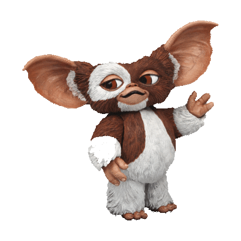

WELCOME!
This is a quiz about the history of monsters in movies.
Whether it's Gizmo to Godzilla, the Mummy or Mike Wazowski,
movie monsters have been a phenomenon for over one hundred years
- and they aren't going anywhere soon!
...And good luck!

How does it work?
There are all sorts of movie monsters, and here, you will have a choice between a variety of categories.
You can choose one category, or all of them.
You will be given five questions, each of varying difficulty. Question one is worth one point, question two is worth
two, and so on, with the final question being worth five points. So there are 15 points up for grabs.